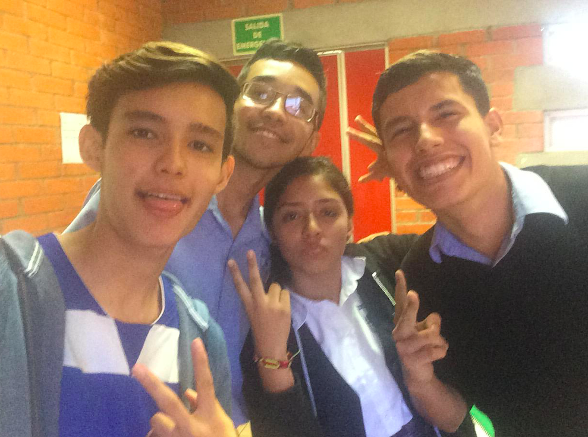

OLMIFI
La Olimpiada Michoacana de Física y la Olimpiada Nacional de Física hasta ahora son mis concursos académicos favoritos. No solo por el amor que le tengo a la física si no que el ambiente que se crea rodeado de personas que buscan aprender e intentar ser los mejores es increiblemente competitivo y te ayuda a superarte.